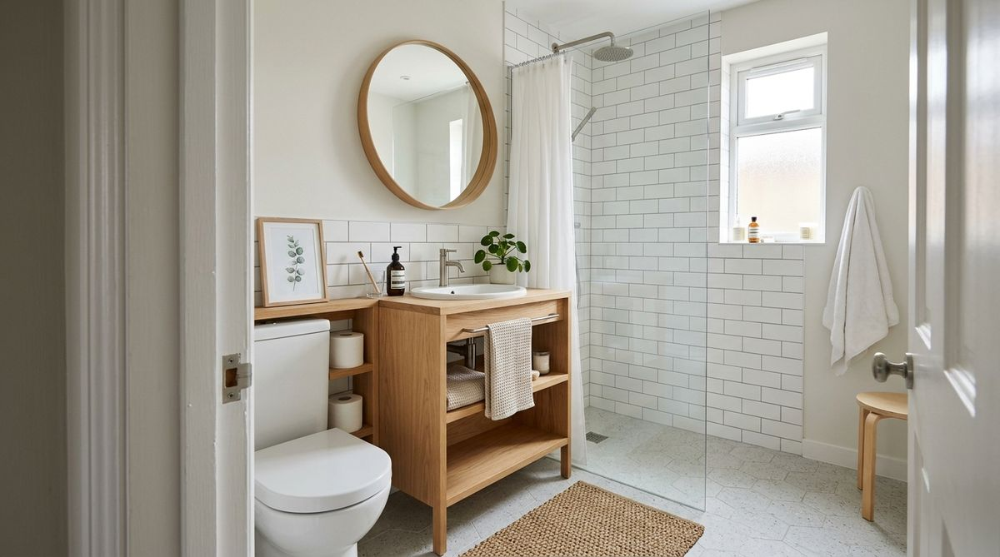
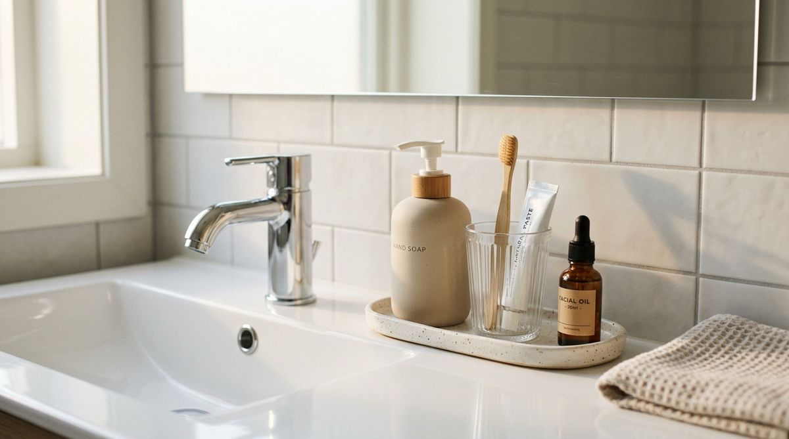

Your bathroom may not actually be too small. It may simply have too many things competing for your attention.
When standing in a compact apartment bathroom, the instinctive reaction to feeling overwhelmed is almost always to assume you need more storage. You search for another hanging tier, an over-the-toilet shelving unit, or a collection of acrylic organizers to stack on every ledge. Yet after adding more bins and baskets, the room often feels even more crowded than before.
The issue in most compact spaces is not a lack of square footage. It is an excess of visual noise. A bathroom can contain only twenty completely useful everyday items, but if each item has a different neon label, varied height, and scattered location, your eyes register constant chaos.
The goal is not an impractical, sterile showroom where you hide every daily essential away. The goal is creating a space with a clear visual hierarchy—a bathroom that is easy to read, calming to enter, and effortless to maintain every single morning without buying a single new piece of storage.
Why Tiny Bathrooms Feel Visually Busy
In a spacious primary bathroom, several objects sitting on a long vanity countertop blend into the background. In a small bathroom, however, several unique spatial mechanics magnify visual noise:
- Compressed Visual Field: Because walls and fixtures sit within a few feet of each other, your peripheral vision captures the sink ledge, shower ledge, towel hooks, and medicine cabinet all at the exact same moment.
- High Contrast Commercial Packaging: Shampoo bottles, toothpaste tubes, and mouthwash containers are specifically engineered by brands to scream for attention on supermarket shelves. In a compact space, six bright logos create an immediate visual clash.
- Backup Product Migration: Extra shampoo bottles, spare hand soaps, and unopened razors frequently sit out in plain sight alongside active daily essentials, doubling the number of visible items.
- Fragmented Surface Placement: Leaving one bottle on the back of the toilet, two near the faucet, one on a window ledge, and two on the shower rim scatters focal points across every square foot.
Understanding these practical visual triggers helps you realize that the bathroom doesn't need structural renovation—it simply needs visual streamlining.
Physical Clutter vs. Visual Clutter
To solve bathroom overwhelm, it is essential to distinguish between two completely different types of clutter:
| Clutter Type | Core Characteristic | Real-World Example | Effective Fix |
|---|---|---|---|
| Physical Clutter | Objectively too many items for the physical volume | Piles of expired lotions and old towels preventing the cabinet door from closing | Decluttering, discarding, and archiving backups |
| Visual Clutter | Items function fine, but too many elements compete for visual attention | Five active toiletries scattered on a tiny vanity, each with bold labels and bright colors | Grouping, simplifying colors, and establishing a single focal point |
A small bathroom can be 100% physically organized—with zero trash and only necessary products—and still feel noisy if every object is fighting for the spotlight. For more spatial mistakes that create this feeling, see our analysis of bathroom storage mistakes that make a space feel smaller.
Find What Is Asking for Attention
Before moving a single bottle, you need an objective diagnostic. Professional interior stylists call this The Doorway Test.

Step completely outside your bathroom and stand in the doorway looking in. Take a relaxed breath and ask yourself three sequential questions:
- "What is the very first thing my eyes notice?" (Is it a beautiful mirror, or a bright red mouthwash bottle on the edge of the sink?)
- "What do my eyes jump to second and third?" (Are your eyes darting around between five scattered spots?)
- "Which of these visible items actually need to be in my direct line of sight?"
This simple exercise reveals the exact visual friction points in your bathroom within ten seconds.
Step 1 — Choose One Visual Focus
Every room needs a clear primary anchor. In a tiny bathroom, the strongest natural focal point is almost always the mirror and vanity area, a clean tiled wall, or a natural window.
When you establish one intentional visual focus, the human brain perceives order immediately upon entering. You achieve this not by adding elaborate decorative objects, but by clearing distracting visual competition from around that primary feature.
Step 2 — Hide Visual Backups
One of the easiest ways to eliminate 50% of visual noise without discarding anything useful is removing backup inventory from open surfaces.
- Unopened bottles of body wash and shampoo do not belong on the shower ledge.
- Extra rolls of toilet paper do not need to sit stacked four-high on the vanity.
- Refill hand soap cartons and bulk cotton swabs belong inside a cabinet or under the sink.
Only keep active, in-use items in the open field. Backups should live in secondary storage—accessible when needed, but completely invisible during daily life. For smart ways to maximize enclosed storage, explore our guide on under-sink and linen closet organization.
Step 3 — Simplify the Color Field
You do not need to buy matching luxury glass bottles or decant every single product to create a calm bathroom. That is an unrealistic expectation for real life.
Instead, simplify the existing color field with small, intentional adjustments:
- Turn Loud Labels Away: Simply turning commercial bottles so their plain, neutral backs face forward instantly softens contrast.
- Peel Exterior Wrappers: Many hand soaps and cosmetic bottles have clear shrink-wrap labels that peel off easily, leaving a sleek neutral container underneath.
- Match Towel Tones: Sticking to one neutral towel shade (such as warm white, oat, or sage) unifies the visual plane much better than mixed patterned bath linens.
Step 4 — Reduce Visual Competition Through Grouping
When objects are scattered individually across a counter or shelf, each object registers as a separate visual chore. When those same objects are placed together in a cohesive group, the brain registers them as a single unified element.

"Grouping reduces visual competition. Three loose bottles create three focal points; three bottles resting on a small ceramic tray create one."
Place your daily facial cleanser, moisturizer, and toothbrush together in a shallow tray or small dish. Grouping provides immediate visual boundaries without taking up extra space.
Step 5 — Take the Doorway Test
Now return to the bathroom entrance and re-evaluate the space from the doorway:
- Look at the room from your natural entrance angle.
- Notice whether your eyes rest calmly on your chosen focal point.
- Check if any single loud bottle or scattered item is still demanding unearned attention.
- Make minor 5-second shifts to restore balance.
To keep cleaning products from competing with daily grooming items, see our dedicated guide on how to organize bathroom cleaning supplies.
A Realistic Before and After Comparison
To see how visual hierarchy transforms a space without structural changes or new furniture, consider this typical small apartment scenario:
The Reality of Visual Streamlining
Before: A small vanity with seven loose items: a brightly labeled hand soap, a toothpaste tube, an electric toothbrush, a face wash, a bottle of mouthwash, a backup razor, and hair gel. The shower ledge holds three active bottles plus two nearly empty backups. The room feels cramped, cluttered, and stressful.
After: The exact same bathroom, with zero new storage products. The backup razor, mouthwash, and extra shower bottles are moved inside the cabinet. The daily cleanser, toothbrush, and soap are grouped neatly on the left side of the sink with labels turned sideways. The mirror and clean subway tile become the dominant view.
The room did not gain a single square inch of physical floor space. The visual field simply became effortless to read.
The 30-Second Visual Clutter Diagnostic
Save this quick 5-step checklist for whenever your bathroom starts feeling busy again:
✓ SEE: Stand in the doorway and identify what demands attention first.
✓ HIDE: Move backup products, extra supplies, and rarely used tools behind closed doors.
✓ SIMPLIFY: Turn loud commercial labels away from the primary line of sight.
✓ GROUP: Gather loose counter items into a single defined boundary or tray.
✓ CHECK: Step back to the doorway and verify that the space feels calm and cohesive.
Simple Maintenance That Sticks
Maintaining a visually calm bathroom does not require an elaborate cleaning schedule. Keep it sustainable with three lightweight habits:
- The One-Touch Return: Place daily items directly back into their visual group after morning routines.
- The Backup Boundary: Never leave replacement bottles on open counters—carry new toiletries directly to their enclosed home.
- The Monthly Doorway Reset: Spend 30 seconds once a month standing at the door to catch and reset visual creep before it builds.
For more foundational principles across all room types, browse our complete collection of bathroom organization ideas.
When You Actually Need More Storage
While visual hierarchy solves the vast majority of small-space frustration, there are times when adding physical storage is genuinely necessary. You may need additional storage when:
- Essential daily toiletries have no safe, dry, or accessible surface.
- Shared household routines mean multiple people must access different items simultaneously.
- The bathroom lacks any enclosed cabinet or vanity storage entirely.
Before purchasing new organizers, always ask: "Is my problem a lack of physical capacity, or a lack of visual order?" Answering this question honestly saves both money and square footage.
Frequently Asked Questions
No. While matching amber or white bottles look cohesive in photos, decanting is completely optional. You can achieve 90% of the same visual calm simply by grouping items together, turning bold labels inward, or keeping secondary products inside drawers.
Clear all backup inventory from the sink and shower ledges, and group remaining countertop items into a single cluster beside the faucet. Removing backups and clustering loose items cuts visual distraction immediately.
When a space is visually busy, your brain spends energy processing every contrasting color, edge, and label. This sensory density creates psychological friction, making compact rooms feel much more cramped than their physical dimensions dictate.
Are you 18-24 or a Student? Get 6 Months of Prime for $0!
Limited Time Offer (Ends Oct 9): Enjoy fast, free shipping, unlimited streaming, $0 food delivery (Grubhub+), fuel savings (10¢/gal), Prime Reading, unlimited Amazon Photos storage, and exclusive grocery deals. Claim your 6-month free trial of Prime for Young Adults today.
Try Prime for Free →